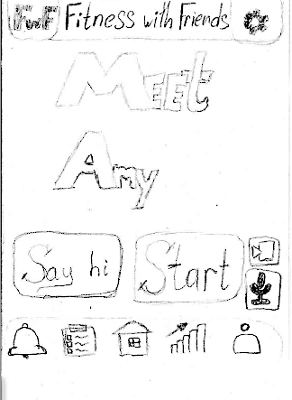

The following prototypes illustrate each of three tasks depicted in project step 2.2; we present the prototypes in the same order as their associated task from step 2:
1. Task 1 : Workout with a random person.
Task 1: Find another FwF user to workout with
Task 1:
The set of interfaces shown above convey the necessary steps for a typical user interested in finding another FwF member to workout with.
2. Task 2 : Pick a personal trainer.
Task 2: Pick a personal trainer
The above interfaces illustrate the progression of a task wherein a user desires to schedule an appointment with a personal trainer.
3. Track and Compare Progress
Task 3: Track/compare your progress
The above views represent the transitions needed for any fitness-going user to compare their workout history with a friend as well as track their progress.
Briefing
A Community Building Social Fitness App "Fitness With Friends"
In the life of a current pandemic it constantly changes in regulations and our everyday life became uncertain.
Some of our usual everyday activities became prohibitive especially for certain vulnerable groups of people (elderly people, cancer patients/survivors, etc.).
With our app we would like to solve this issue and bring back social aspect of working out.
We seek to engender the (much needed) positive psychological benefits that stem from social interactions, as well as physical activity.
The goal is to provide users an interface with multiple features: from scheduling live workouts with friends,
to signing up for instructor lead workouts, and even to join virtual socials with other members of the community.
Scenario Cards
Workout with a random person for a work out.
Schedule a workout with a personal trainer.
Track/Compare (with Max) your progress.
Observations
General feedback for our homescreen
Homescreen
This iteration combined 2 interfaces present in the previous iteration: a main menu with 4 options represented symbolically and a general
purpose menu along a bottom ribbon.
We received mixed feedback regarding this version of a home screen, largely due to ambiguous interpretations of the symbols associated with our primary four options.
The use of simple icons such as that of a handshake, a shuffle symbol and a magnifying glass illustrated effective example and symbolic iconic representations. Conversely,
the presence of additional symbols surrounding the more recognizable icons influenced user confusion; one participant suggested simplifying images in order to reduce interpretation confounds and, consequently, bolster user experience by faciliating navigation.
Additionally, the statistics icon in the bottom menu did not elicit enough participant awareness in order to successfully perform task 3: track/compare your progress. In other words, participant users failed to draw the connection between the statistics icon and the entry point into task 3.
Neglecting to have abided by the design principle of consistency may have resulted in this disconnect. In a manner akin to tasks 1 and 2, we intend to elevate the initiation of task 3 as a main option of the home screen.
As a result, in the next iteration we plan to simplify and combine some of the main menu (get rid of confusing images, combine 2 random options in one, etc.).
Additionally, stats and progress functionality should be moved from a general purpose menu into the main menu.
UI pick parameters for a work out
Specify options for a work out UI
Comments for this UI included:
Make "Preferences" an optional field
Create more options for the length of a work out
Thus in the next stage, the length of a work out would probably be represented by means of a sliding window, as
this would help in incorporating wider ranges for a work out. Next, "Preferences" design should also be reworked
into the optional variant.
Meet and Greet UI

Meet and Greet UI
Comments for this UI included:
It is not clear what happens after clicking on the "Say hi" button
In the next iteration, we would work on a disambiguation of the meet and greet functionality in order to make it clear and understandable.
Progress UI
Progress UI
Comments for this UI included:
Compare progress should be a main option on the home screen
Analysis page is not obvious enough
As previously mentioned, in the next iteration we will integrate the progress option into the homescreen as opposed to the menu bar. Also, we intend to rework the analysis page (icons/images were not clear enough for the user.)